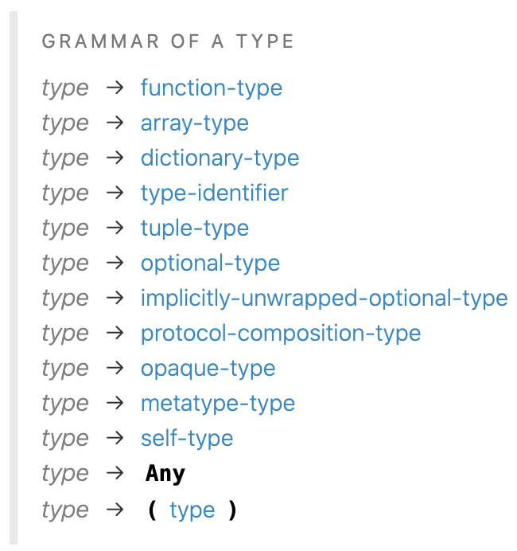
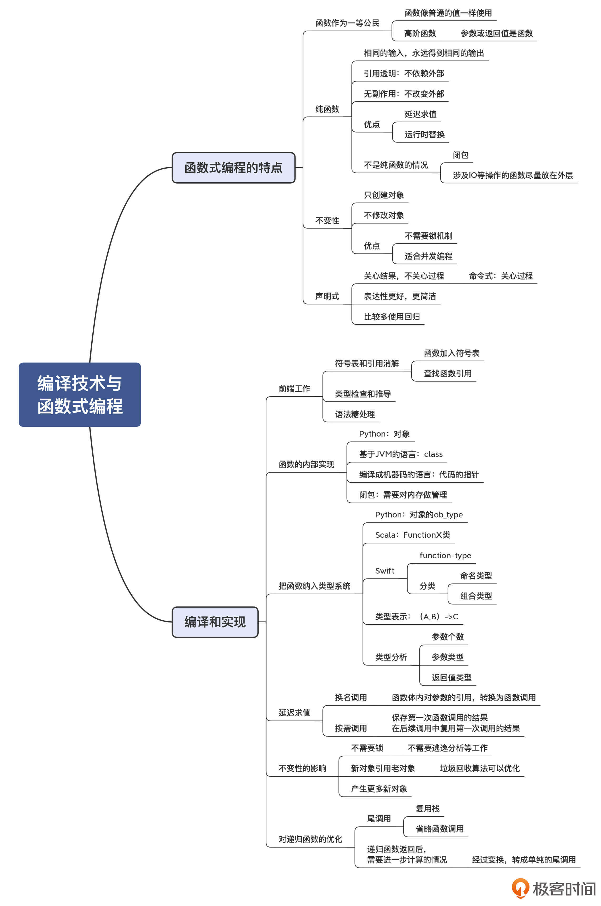

- 00 学习指南 如何学习这门编译原理实战课？.md.html
- 00 开篇词 在真实世界的编译器中游历.md.html
- 01 编译的全过程都悄悄做了哪些事情？.md.html
- 02 词法分析：用两种方式构造有限自动机.md.html
- 03 语法分析：两个基本功和两种算法思路.md.html
- 04 语义分析：让程序符合语义规则.md.html
- 05 运行时机制：程序如何运行，你有发言权.md.html
- 06 中间代码：不是只有一副面孔.md.html
- 07 代码优化：跟编译器做朋友，让你的代码飞起来.md.html
- 08 代码生成：如何实现机器相关的优化？.md.html
- 09 Java编译器（一）：手写的编译器有什么优势？.md.html
- 10 Java编译器（二）：语法分析之后，还要做些什么？.md.html
- 11 Java编译器（三）：属性分析和数据流分析.md.html
- 12 Java编译器（四）：去除语法糖和生成字节码.md.html
- 13 Java JIT编译器（一）：动手修改Graal编译器.md.html
- 14 Java JIT编译器（二）：Sea of Nodes为何如此强大？.md.html
- 15 Java JIT编译器（三）：探究内联和逃逸分析的算法原理.md.html
- 16 Java JIT编译器（四）：Graal的后端是如何工作的？.md.html
- 17 Python编译器（一）：如何用工具生成编译器？.md.html
- 18 Python编译器（二）：从AST到字节码.md.html
- 19 Python编译器（三）：运行时机制.md.html
- 20 JavaScript编译器（一）：V8的解析和编译过程.md.html
- 21 JavaScript编译器（二）：V8的解释器和优化编译器.md.html
- 22 Julia编译器（一）：如何让动态语言性能很高？.md.html
- 23 Julia编译器（二）：如何利用LLVM的优化和后端功能？.md.html
- 24 Go语言编译器：把它当作教科书吧.md.html
- 25 MySQL编译器（一）：解析一条SQL语句的执行过程.md.html
- 26 MySQL编译器（二）：编译技术如何帮你提升数据库性能？.md.html
- 27 课前导读：学习现代语言设计的正确姿势.md.html
- 28 前端总结：语言设计也有人机工程学.md.html
- 29 中端总结：不遗余力地进行代码优化.md.html
- 30 后端总结：充分发挥硬件的能力.md.html
- 31 运行时（一）：从0到语言级的虚拟化.md.html
- 32 运行时（二）：垃圾收集与语言的特性有关吗？.md.html
- 33 并发中的编译技术（一）：如何从语言层面支持线程？.md.html
- 34 并发中的编译技术（二）：如何从语言层面支持协程？.md.html
- 35 并发中的编译技术（三）：Erlang语言厉害在哪里？.md.html
- 36 高级特性（一）：揭秘元编程的实现机制.md.html
- 37 高级特性（二）：揭秘泛型编程的实现机制.md.html
- 38 综合实现（一）：如何实现面向对象编程？.md.html
- 39 综合实现（二）：如何实现函数式编程？.md.html
- 40 成果检验：方舟编译器的优势在哪里？.md.html
- 不定期加餐1 远程办公，需要你我具备什么样的素质？.md.html
- 不定期加餐2 学习技术的过程，其实是训练心理素质的过程.md.html
- 不定期加餐3 这几年，打动我的两本好书.md.html
- 不定期加餐4 从身边的牛人身上，我学到的一些优秀品质.md.html
- 不定期加餐5 借助实例，探究C++编译器的内部机制.md.html
- 划重点 7种编译器的核心概念与算法.md.html
- 期末答疑与总结 再次审视学习编译原理的作用.md.html
- 热点问题答疑 如何吃透7种真实的编译器？.md.html
- 用户故事 易昊：程序员不止有Bug和加班，还有诗和远方.md.html
- 知识地图 一起来复习编译技术核心概念与算法.md.html
- 结束语 实战是唯一标准！.md.html
- 捐赠
39 综合实现（二）：如何实现函数式编程？
你好，我是宫文学。
近些年，函数式编程正在复兴。除了一些纯函数式编程语言，比如Lisp、Clojure、Erlang等，众多的主流编程语言，如Python、JavaScript、Go甚至Java，它们都有对函数式编程的支持。
你应该会发现，现在人们对于函数式编程的讨论有很多，比如争论函数式编程和面向对象编程到底哪个更强，在语言里提供混合的编程模式到底对不对等等。
这些论战一时半会儿很难停息。不过我们的这一讲，不会涉及这些有争议的话题，而是试图从编译技术的角度，来探讨如何支持函数式编程，包括如何让函数作为一等公民、如何针对函数式编程的特点做优化、如何处理不变性，等等。通过函数式编程这个综合的主题，我们也再一次看看，如何在实现一门语言时综合运用编译原理的各种知识点，同时在这个探究的过程中，也会加深你对函数式编程语言的理解。
好，我们先来简单了解一下函数式编程的特点。
函数式编程的特点
我想，你心里可能多多少少都会有一点疑问，为什么函数式编程开始变得流行了呢？为什么我在开篇的时候，说函数式编程正在“复兴”，而没有说正在兴起？为什么围绕函数式编程会有那么多的争论？
要回答这几个问题，我会建议你先去了解一点历史。
我们都知道，计算机发展历史上有一个重要的人物是阿兰 · 图灵（Alan Turing）。他在1936年提出了一种叫做图灵机的抽象模型，用来表达所有的计算。图灵机有一个无限长的纸带，还有一个读写头，能够读写数据并根据规则左右移动。这种计算过程跟我们在现代的计算机中，用一条条指令驱动计算机运行的方式很相似。
不过，计算模型其实不仅仅可以用图灵机来表达。早在图灵机出现之前，阿隆佐 · 邱奇（Alonzo Church）就提出了一套Lambda演算的模型。并且，计算机科学领域中的很多人，其实都认为用Lambda演算来分析可计算性、计算复杂性，以及用来编程，会比采用图灵机模型更加简洁。而Lambda演算，就是函数式编程的数学基础。
补充：实际上，邱奇是图灵的导师。当年图灵发表他的论文的时候，编辑看不懂，所以找邱奇帮忙，并推荐图灵成为他的学生，图灵机这个词也是邱奇起的。所以师生二人，对计算机科学的发展都做出了很大的贡献。
因为有Lambda演算的数学背景，所以函数式编程范式的历史很早。上世纪50年代出现的Lisp语言，就是函数式编程语言。Lisp的发明人约翰 · 麦卡锡（John McCarthy）博士，是一位数学博士。所以你用Lisp语言和其他函数式编程语言的时候，都会感觉到有一种数学思维的味道。
也正因如此，与函数式编程有关的理论和术语其实是有点抽象的，比如函子（Functor）、单子（Monad）、柯里化（Currying）等。当然，对它们的深入研究不是我们这门课的任务。这里我想带你先绕过这些理论和术语，从我们日常的编程经验出发，来回顾一下函数式编程的特点，反倒更容易一些。
我前面也说过，目前流行的很多语言，虽然不是纯粹的函数式编程语言，但多多少少都提供了对函数式编程的一些支持，比如JavaScript、Python和Go等。就连Java语言，也在Java8中加入了对函数式编程的支持，很多同学可能已经尝试过了。
我们使用函数式编程最多的场景，恐怕是对集合的处理了。举个例子，假设你有一个JavaScript的数组a，你想基于这个数组计算出另一个数组b，其中b的每个元素是a中对应元素的平方。如果用普通的方式写程序，你可能会用一个循环语句，遍历数组a，然后针对每个数组元素做处理：
var b = [];
for (var i = 0; i< a.length; i++){ //遍历数组a
b.push(a[i]*a[i]); //把计算结果加到数组b中
}
不过你也可以采用更简单的实现方法。
这次我们使用了map方法，并给它传了一个回调函数。map方法会针对数组的每个元素执行这个回调函数，并把计算结果组合成一个新的数组。
function sq(item){ //计算平方值的函数
return item*item;
}
var b = a.map(sq); //把函数作为参数传递
它还可以写成一种更简化的方式，也就是Lambda表达式的格式：
var b = a.map(item=>item*item);
通过这个简单的例子，我们可以体会出函数式编程的几个特点：
1.函数作为一等公民
也就是说，函数可以像一个数值一样，被赋给变量，也可以作为函数参数。如果一个函数能够接受其他函数作为参数，或者能够把一个函数作为返回值，那么它就是高阶函数。像示例程序中的map就是高阶函数。
那函数式编程语言的优势来自于哪里呢？就在于它可以像数学那样使用函数和变量，这会让软件的结构变得特别简单、清晰，运行结果可预测，不容易出错。
根据这个特点，我们先来看看函数式编程语言中的函数，跟其他编程语言中的函数有什么不同。
2.纯函数（Pure Function）
在函数式编程里面，有一个概念叫做纯函数。纯函数是这样一种函数，即相同的输入，永远会得到相同的输出。
其实你对纯函数应该并不陌生。你在中学时学到的函数，就是纯函数。比如对于f(x)=ax+b，对于同样的x，所得到的函数值肯定是一样的。所以说，纯函数不应该算是个新概念，而是可以回归到你在学习计算机语言之前的那个旧概念。
在C语言、Java等语言当中，由于函数或方法里面可以引用外面的变量，比如全局变量、对象的成员变量，使得其返回值与这些变量有关。因此，如果有其他软件模块修改了这些变量的值，那么该函数或方法的返回值也会受到影响。这就会让多个模块之间基于共享的变量耦合在一起，这种耦合也使得软件模块的依赖关系变得复杂、隐秘，容易出错，牵一发而动全身。这也是像面向对象语言这些命令式编程语言最令人诟病的一点。
而对于纯函数来说，它不依赖外部的变量，这个叫做引用透明（Reference Transparency）。纯函数的这种“靠谱”、可预测的特征，就给我们的编程工作带来了很多的好处。
举个例子。既然函数的值只依赖输入，那么就跟调用时间无关了。假设有一个函数式g(f(x))，如果按照传统的求值习惯，我们应该先把f(x)的值求出来，再传递给g()。但如果f(x)是纯函数，那么早求值和晚求值其实是无所谓的，所以我们可以延迟求值（Lazy Evaluation）。
延迟求值有很大的好处。比如，在下面的伪代码中，unless是一个函数，f(x)是传给它的一个参数。在函数式编程语言中，只有当condition为真时，才去实际对f(x)求值。这实际上就降低了工作量。
//在满足条件时，执行f(x)
unless(condition, f(x));
//伪代码
int unless(bool condition, f(x)){
if (condition)
return f(x);
}
再回到纯函数。我说纯函数的输出仅依赖输入，有一点需要说明，就是函数只有返回值这一种输出，没有其他的输出。换句话说，纯函数没有副作用（Side Effect）。
什么是副作用呢？简单地说，就是函数在运行过程中影响了外界环境。比如，修改了一个全局变量或者是对象的属性、往文件里写入内容、往屏幕上打印一行字、往数据库插入一条记录、做了一次网络请求，等等。也就是说，纯函数要求程序除了计算，其他的事情都不要做。
如果函数有副作用的话，那么我们前面说的时间无关性就被破坏了。比如说，原来a函数是在屏幕上打印“欢迎：”，b函数是屏幕输出你的名字，最后形成“欢迎：XXX”。那么a和b的前后顺序就不能颠倒。
你可能会说，一个有用的程序，哪能没有副作用呀。你说得对。在函数式编程里，程序会尽量把产生副作用的函数放在调用的外层，而完成内部功能的大部分函数，都保持是纯函数。比如，最外层的函数接受网络请求，并对客户端返回结果，它是有副作用的。而程序所使用的其他函数，都没有副作用。
纯函数的功能是如此地简单纯粹，以至于它还能继续带来一些好处。比如说，像Erlang这样的语言，可以在运行时给某些函数升级，而不用重启整个系统。为什么呢？因为这些升级后的函数，针对相同的输入，程序得到的结果是一样的，那么对这个函数的使用者来说，就没有任何影响。这也是用Erlang写的系统会具有很高的可靠性的原因之一。
不过，函数式编程语言里使用的也不全都是纯函数，比如有的函数要做一些IO操作。另外，闭包，是函数引用了词法作用域中的自由变量而引起的，所以也不是纯函数。
总结起来，在函数式编程中，会希望函数像数学中的函数那样纯粹，即不依赖外部（引用透明），也不改变外部（无副作用），从而带来计算时间、运行时替换等灵活性的优势。
好，说完了函数的不同，我们再来看看函数式编程语言里使用变量跟其他语言的不同。
3.不变性（Immutability）
我们都知道，在数学里面，当我们用到x和y这样的变量的时候，它所代表的值在计算过程中是不变的。
没错，这也是函数式编程的一个重要原则，不变性。它的意思是，程序会根据需要来创建对象并使用它们，但不会去修改对象的状态。如果有需要修改对象状态的情况，那么去创建一个新对象就好了。
在前面的示例程序中，map函数返回了一个新的数组，而原来的数组保持不变。这就体现了不变性的特点。
不变性也会带来巨大的好处。比如说，由于函数不会修改对象的状态，所以就不存在并发程序中的竞争情况，进而也就不需要采用锁的机制。所以说，函数式编程更适合编写并发程序。这个优势，也是导致这几年函数式编程复兴的重要原因。
好，那么最后，我们再来注意一下函数式编程语言在编程风格上的不同。
4.声明式（Declarative）的编程风格
在计算机语言中，实现编程的方式主要有几种。
第一种实现方式，我们会一步步告诉计算机该去怎么做计算：循环访问a的元素，计算元素的平方值，并加到b中。这种编程风格叫做命令式（Imperative）编程，即命令计算机按照你要求的步骤去做。命令式编程风格植根于现代计算机的结构，因为机器指令本质上就是命令式的。这也是图灵机模型的特点。
而第二种实现方式叫做声明式（Declarative）编程。这种编程风格，会要求计算机给出你想要的结果，而不关心过程。比如在前面的示例程序中，你关心的是对数组中的每个元素计算出平方值。至于具体的处理步骤，是对数组a的元素顺序计算，还是倒序计算，你并不关心。
声明式编程风格的另一个体现，是递归函数的大量使用。这是因为我们描述一个计算逻辑的时候，用递归的方式表达通常会更简洁。
举个例子。你可能知道，斐波纳契（Fibonacci）数列中的每个数，是前两个数字的和。这个表达方式就是递归式的。写成公式就是：Fibonacci(n)=Fibonacci(n-1)+Fibonacci(n-2)。这个公式与我们用自然语言的表达完全同构，也更容易理解。
我把计算斐波纳契数列的程序用Erlang这种函数式语言来写一下，你可以进一步体会到声明式编程的那种简洁和直观的特点：
%% 计算斐波那契的第N个元素
fibo(1) -> 1; %%第一个元素是1
fibo(2) -> 1; %%第二个元素也是1
fibo(N) -> fibo(N-1) + fibo(N-2). %%递归
好了，现在我们已经了解了函数式编程的一些关键特征。它的总体思想呢，就是像数学那样去使用函数和值，使可变动部分最小化，让软件的结构变得简单、可预测，从而获得支持并发、更简洁的表达等优势。那么下面，我们就一起来看看如何结合编译原理的相关知识点，来实现函数式编程的这些特征。
函数式编程语言的编译和实现
为了实现函数式语言，我们在编译期和运行时都要做很多工作。比如，要在编译器前端做分析和各种语义的检查； 要以合适的方式在程序内部表示一个函数；要针对函数式编程的特点做特别的优化，等等。接下来我们就从编译器的前端工作开始学起。
编译器前端的工作
函数式编程语言，在编译器的前端也一样要做很多的语法分析和语义分析工作。
你应该知道，语言的设计者，需要设计出如何声明一个函数。像是JavaScript语言会用function关键字，Go语言用func关键字，Rust语言用的是fn关键字，而C语言根本不需要一个关键字来标识一个函数的定义；另外，如何声明函数的参数和返回值也会使用不同的语法。编译器都要能够正确地识别出来。
语义分析的工作则更多，包括：
- 符号表和引用消解：当声明一个函数时，要把它加入到符号表。而当程序中用到某个函数的时候，要找到该函数的声明。
- 类型检查和推导：既然函数可以被当做一个值使用，那么它一定也是有类型的，也要进行类型检查和推导。比如，在程序的某个地方只能接受返回值为int，有一个参数为String的函数，那么就需要被使用的函数是否满足这个要求。关于函数的类型，一会儿我还会展开讲解。
- 语法糖处理：在函数式编程中经常会使用一些语法糖。最常见的语法糖就是Lambda表达式，Lambda表达式可以简化匿名函数的书写。比如，前面JavaScript的示例代码中，对数组元素求平方的函数可以写成一个Lambda表达式，从而把原来的代码简化成了一行：
var d = a.map(item=>item*item); //括号中是一个lambda表达式
在这个示例程序中，=>左边的是匿名函数的参数，右边的是一个表达式，这个表达式的计算结果就是匿名函数的返回值。你看，通过一个Lambda表达式，代替了传统的函数声明，代码也变得更简洁了。
OK，因为在编译器前端还要对函数做类型分析，所以我们再来探究一下函数的类型是怎么一回事。
把函数纳入类型系统
这里我要先提一个问题，就是在函数式编程语言里，既然它能够把函数当做一个值一样去看待，那么也应该有相应的类型吧？这就要求语言的类型系统能够把函数包含进来。因此函数式编程语言在编译的时候，也要进行类型检查和类型推断。
不过，我们在谈论类型时，比较熟悉的是值类型（如整型、浮点型、字符型），以及用户自定义的类型（如结构、类这些），如果函数也是一种类型，那跟它们是什么关系呢？如果由你来设计，那么你会怎么设计这个类型体系呢？
在不同的语言里，设计者们是以不同的方式来解决这个问题的。拿Python来说，Python中一切都是对象，函数也不例外。函数对象的ob_type字段也被设置了合适的类型对象。这里，你可以再次回味一下，Python的类型系统设计得是如何精巧。
我们再看看Scala的类型系统。上一讲我提出过，Scala实现了一个很漂亮的类型系统，把值类型和引用类型（也就是自定义类）做了统一。它们都有一个共同的根，就是Any。由于Scala是基于JVM的，所以这些类型最后都是以Java的类来实现的。
那么函数也不例外。因为Scala的函数最多支持22个参数，所以Scala里有内置的Function1、Function2…Function22这些类，作为函数的类型，它们也都是Any的子类型。每个Scala函数实际上是这些类的实例。
另外，Swift语言的文档对类型的定义也比较清楚。它以产生式的方式列出了type的语法定义。根据该语法，类型可以是函数类型、数组类型、字典类型、元组类型等等，这些都是类型。

并且，它还把所有类型分成了两个大类别：命名类型（Named Type）和复合类型（Compound Type）。
- 命名类型包括类、结构体、枚举等，它们都有一个名称，比如自定义类的类名就是类型名称。
- 复合类型则没有名称，它是由多个其他类型组合而成的。函数和元组都属于复合类型。函数的类型是由参数的类型和返回值的类型组合而成的，它们都是编译器对函数类型进行计算的依据。
举例来说，假设一个函数有两个参数，分别是类型A和B，而返回值的类型是C，那么这个函数的类型可以计为(A, B)->C。这就是对函数的类型的形式化的表达。
那么进一步，我们如何在编译期里针对函数的类型做类型分析呢？它跟非复合的类型还真不太一样，因为编译器需要检查复合类型中的多个元素。
举个例子。在一个高阶函数g()里，能够接收一个函数类型的参数f(A,B)，要求其类型是(A, B)->C，而实际提供的函数f2的类型是(A1, B1)->C1，那么你在编译器里如何判断函数的类型是否合法呢？这里的算法要做多步的检查：
- 第一，f2也必须有两个参数，这点是符合的。
- 第二，检查参数的类型。A1和B1必须是跟A和B相同的类型，或者是它们的父类型，这样f1才能正确地给f2传递参数。
- 第三，检查返回值的类型。C1，则必须是C的子类型，这样f1才能接收f2的返回值。
好，说完了编译器的前端工作，我们再来看看函数在语言内部的实现。
函数的内部实现
在函数式编程里，所有一切都围绕着函数。但是在编译完毕以后，函数在运行时中是怎么表示的呢？
就像不同的面向对象的语言，在运行时是以不同的方式表示一个对象的，不同的函数式编程语言，在运行时中去实现一个函数的机制也是不太一样的。
- 在Python中，一切都是对象，所以函数也是一种对象，它是实现了Callable协议的对象，能够在后面加上一对括号去调用它。
- 在Scala和Java这种基于JVM的语言中，函数在JVM这个层次没有获得原生支持，因此函数被编译完毕以后，其实会变成JVM中的类。
- 在Julia、Swift、Go、Rust这样编译成机器码的语言中，函数基本上就是内存中代码段（或文本段）的一个地址。这个地址在编译后做链接的时候，会变成一个确定的地址值。在运行时，跳转到这个地址就可以执行函数的功能。
补充：再具体一点的话，编译成机器码的函数有什么特点呢？我们再来回顾一下。
首先，函数的调用者要根据调用约定，通过栈或者寄存器设置函数的参数，保护好自己负责保护的寄存器以及返回地址，然后调用函数。
在被调用者的函数体内，通常会分为三个部分。头尾两个部分叫做序曲（prelude）和尾声（epilogue），分别做一些初始化工作和收尾工作。在序曲里会保存原来的栈指针，以及把自己应该保护的寄存器存到栈里、设置新的栈指针等，接着执行函数的主体逻辑。最后，到尾声部分，要根据调用约定把返回值设置到寄存器或栈，恢复所保护的寄存器的值和栈顶指针，接着跳转到返回地址。
返回到调用者以后，会有一些代码恢复被保护起来的寄存器，获取返回值，然后继续执行后面的代码。
这样，把上述整个过程的细节弄清楚了，你就知道如何为函数生成代码了。
最后，我们必须提到一种特殊情况，就是闭包。闭包是纯函数的对立面，它引用了上级作用域中的一些自由变量。闭包在运行时不仅是代码段中的一个函数地址，还必须保存自由变量的值。为了实现闭包的运行时功能，编译器需要生成相应的代码，以便在生成闭包的时候，可以在堆里申请内存来保存自由变量的值。而当该闭包不再被引用了，那么就会像不再被引用的对象一样，成为了内存垃圾，要被垃圾回收机制回收。
好了，到这里你可能会觉得，看上去函数的实现似乎跟命令式语言也没有什么不同。不过，接下来你就会看到不同点了，这就是延迟求值的实现。
延迟求值（Lazy Evaluation）
在命令式语言里，我们对表达式求值，是严格按照顺序对AST求值。但对于纯函数来说，由于在任何时候求值结果都是一样的，因此可以进行一定的优化，比如延迟求值（Lazy Evaluation），从而有可能减少计算工作量，或者实现像unless()那样的特别的控制结构。
那么针对这种情况，编译器需要做什么处理呢？
我举个例子，对于下面的示例程序（伪代码）：
g(condition, x){
if (condition)
return x;
else return 0;
}
如果我们调用的时候，在x参数的位置传入的是另一个函数调用f(y)，也就是g(condition, f(y))，那么编译器就会把g()的函数体内用到x的地方，都转换成对f(y)的调用：
if (condition)
return f(y);
else return 0;
这种把对参数的引用替换成对函数调用的技术，叫做换名调用。
不过换名调用有一个缺点，就是f(y)有可能会被多次调用，而且每次调用的结果都是一样的。这就产生了浪费。那么这时，编译器就要更聪明一点。
怎么办呢？那就是在第一次调用的时候，记录下它的值。如果下次再调用，则使用第一次调用的结果。这种方式叫做按需调用。
总而言之，纯函数的特征就导致了延迟求值在编译上的不同。而函数式编程另一个重要的特征，不变性，也会对编译和运行过程造成影响。
不变性对编译和运行时的影响
在遵守不变性原则的情况下，对程序的编译也会有很大的不同。
第一，由于函数不会修改对象的状态，所以就不存在并发程序中的竞争情况，进而也就不需要采用锁的机制，编译器也不需要生成与锁有关的代码。Java、JavaScript等语言中关于参数逃逸的分析，也变得不必要了，因为反正别的线程获得了某个对象或结构体，也不会去修改它的状态。
第二，不变性就意味着，只可能是新的对象引用老的对象，老的对象不可能引用新的对象。这对于垃圾收集算法的意义很大。在分代收集的算法中，如果老对象被新对象引用，那必须等到新对象回收之后老对象才可能被回收，所以函数式编程的程序现在可以更容易做出决定，把老对象放到老一代的区域，从而节省垃圾收集算法的计算量；另外，由于对象不会被改变，因此更容易实现增量收集和并行收集；由于不可能存在循环引用，因此如果采用的是引用计数法的话，就没有必要进行循环引用的检测了。
第三，不变性还意味着，在程序运行过程中可能要产生更多的新对象。在命令式语言中，程序需要对原来的对象修改状态。而函数式编程，只能每次创建一个新对象。所以，垃圾收集算法需要能够尽快地收集掉新对象。
OK，了解了不变性，我们再来看看，针对函数式编程语言的优化算法。其中最重要的就是对递归函数的优化。
对递归函数的优化
虽然命令式的编程语言也会用到递归函数，但函数式编程里对递归函数的使用更加普遍，比如通常会用递归来代替循环。如果要对一个整型数组求和，命令式编程语言会做一个循环，而函数式编程语言则更习惯于用递归的方式表达：sum(a, i) = a[i] + sum(a, i-1)。
按照传统的函数调用的运行方式，对于每一次函数调用，程序都要增加一个栈桢。递归调用一千次，就要增加一千个栈桢。这样的话，程序的栈空间很快就会被耗尽。并且，函数调用的时候，每次都要有一些额外的开销，比如保护寄存器的值、保存返回地址、传递参数等等。
我在第7讲的优化算法里，提到过尾调用优化，也就是执行完递归函数后，马上用return语句返回的情况。
f(x){
....
return g(...); //尾调用
}
在尾调用的场景下，上一级函数的栈桢已经没什么用了，程序可以直接复用。函数调用的过程，可以被优化成指令的跳转，不需要那些函数调用的开销。
不过对于递归调用的情况，往往还需要对递归函数返回值做进一步的计算。比如在下面的求阶乘的函数示例中，返回值是x*fact(x-1)。
//fact.c 求阶乘
int fact(int x){
if (x == 1)
return 1;
else
return x*fact(x-1); //对递归值要做进一步的计算
}
对于编译器来说，它可以经过分析，把这种情况转换成一个单纯的尾调用。具体地说，就是它相当于引入了一个临时的递归函数fact2()，并且用第一个参数acc来记录累计值：
int fact(x){
if (x == 1)
return 1;
else
return fact2(x, x-1); //调用一个临时的递归函数
}
int fact2(int acc, int x){ //参数acc用来保存累计值
if (x == 1){
return acc;
}
else{
return fact2(acc * x, x-1); //一个单纯的尾调用
}
}
如果我们调用fact(5)，其实际执行过程就会在acc参数中连续地做乘法，从而实现阶乘：
->fact(5)
->fact2(5,4)
->fact2(5*4,3)
->fact2(5*4*3,2)
->fact2(5*4*3*2,1)
->5*4*3*2
你可以观察一下编译器实际生成的汇编程序，看看优化后的成果。如果用“clang -O1 -S -o fact.s fact.c”来编译fact函数，就会得到一个汇编代码文件。我对这段代码做了注释，你可以理解下它的逻辑。你可以发现，优化后的函数没有做任何一次递归调用。
_fact: ## @fact
pushq %rbp # 保存栈底指针
movq %rsp, %rbp # 把原来的栈顶，设置为新栈桢的栈底
movl $1, %eax # %eax是保存返回值的。这里先设置为1
cmpl $1, %edi # %edi是fact函数的第一个参数，相当于if(x==1)
je LBB0_3 # 如果相等，跳转到LBB0_3，就会直接返回1
movl $1, %eax # 设置%eax为1，这里%eax会保存累计值
LBB0_2:
imull %edi, %eax # 把参数乘到%eax来
decl %edi # x = x-1
cmpl $1, %edi # x是否等于1？
jne LBB0_2 # 如果不等，跳到LBB0_2，做连乘
LBB0_3:
popq %rbp # 回复原来的栈底指针
retq # 返回
要想完成这种转换，就要求编译器能够基于IR分析出其中的递归结构，然后进行代码的变换。
课程小结
这一讲，我们一起讨论了实现函数式编程特性的一些要点。我希望你能记住这些关键知识点：
第一，函数式编程的理论根基，可以追溯到比图灵机更早的Lambda演算。要理解函数式编程的特点，你可以回想一下中学时代数学课中的内容。在函数式编程中，函数是一等公民。它通过强调纯函数和不变性，大大降低了程序的复杂度，使软件不容易出错，并且能够更好地支持并发编程。并且，由于采用声明式的编程风格，往往程序可以更简洁，表达性更好。
第二，不同的语言实现函数的机制是不同的。对于编译成机器码的语言来说，函数就是一个指向代码的指针。对于闭包，还需要像面向对象的语言那样，管理它在内存中的生存周期。
第三，函数仍然要纳入类型体系中，编译器要支持类型的检查和推断。
第四，针对函数式编程的特点，编译器可以做一些特别的优化，比如延迟求值、消除与锁有关的分析、对递归的优化等等。
同样，我把这一讲的知识点梳理成了思维导图，供你参考：

一课一思
这节课中我提到，在很多情况下，用函数式编程表达一个计算逻辑会更简洁。那么，你能不能找到这样的一些例子？欢迎分享你的经验。
如果你身边也有对函数式编程感兴趣的朋友，那么也非常欢迎你把这节课分享给 TA。感谢你的阅读，下一讲我们会一起解析华为的方舟编译器，到时候再见！
© 2019 - 2023 Liangliang Lee. Powered by gin and hexo-theme-book.